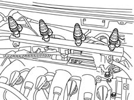
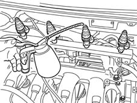

1058OB CHECK METHANE INJECTOR SEAL
- Path
- Test > 10 ENGINE UNIT > 1058 GAS CIRCUIT > 1058OB CHECK METHANE INJECTOR SEAL
- Kind
- test / check procedure
- Applies to
- engines: 1.6 16v; all production periods; only with equipment: BIPOWER
- Interactive page
- https://sloeber94.github.io/elrnDB-fMltpl/en/#/186003454
Applies to: engines: 1.6 16v; all production periods; only with equipment: BIPOWER
This test is designed to check the seal of the injector needle shutter, in fact the seal of the jet is ensured by contact between the seat and the actual shutter.
If the shutter retaining spring is weak, if there is dirt in the injector or it is worn this would mean that the seal is not perfect and therefore methane would leak into the manifold and be drawn in in addition to the normal methane flow rate resulting in the undesired enrichment of the mixture.
This would lead to the presence of unburnt fuel in the exhaust and an increase in consumption.
- Let the engine run for a few minutes operating on methane: this is to let the low pressure side methane reach the correct operating pressure.
- Turn the ignition key to the OFF position.
- Disconnect the negative battery terminal.
- Electrically disconnect the injectors.
- Remove the intake manifold complete with injectors keeping the low pressure pipe and the injectors connected.

- Introduce a small amount of oil into the test injector jet duct.

- Check that there are no gas leaks which would show up in the form of a series of oil bubbles.